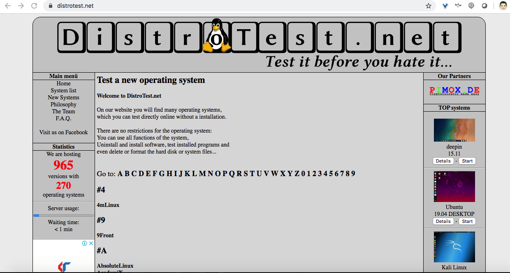
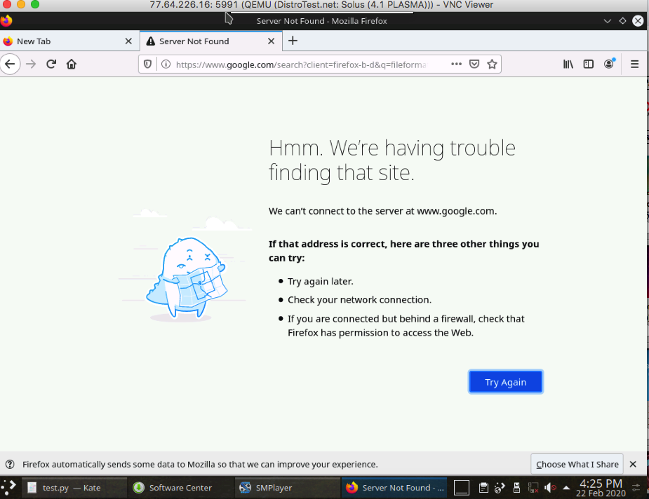
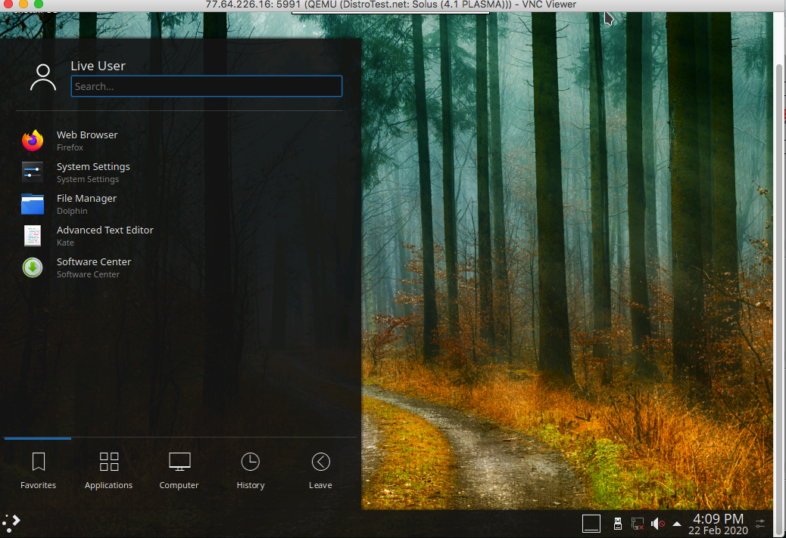
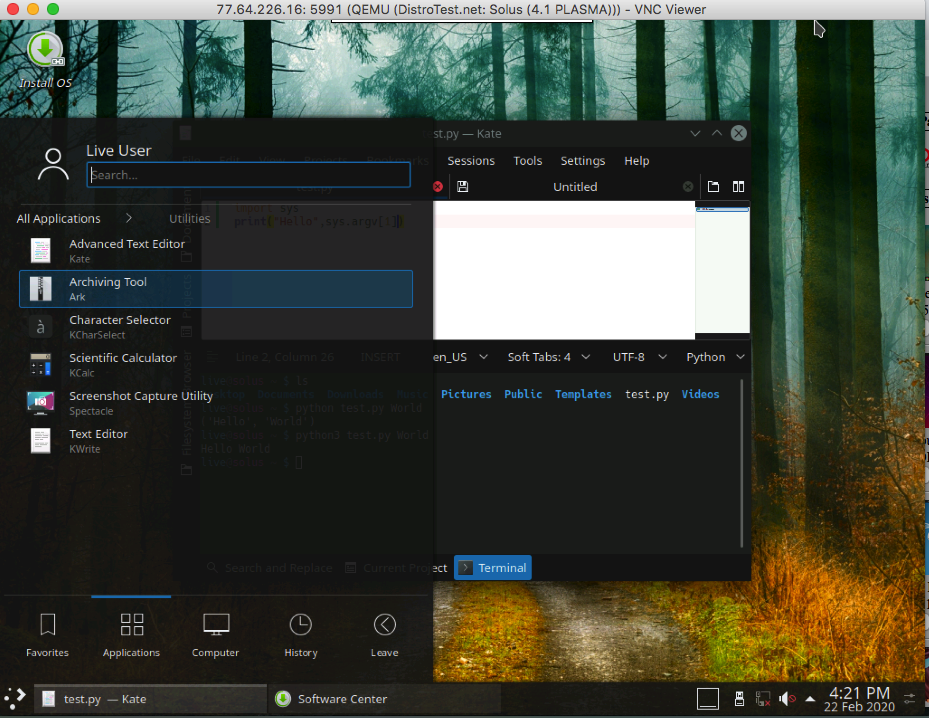
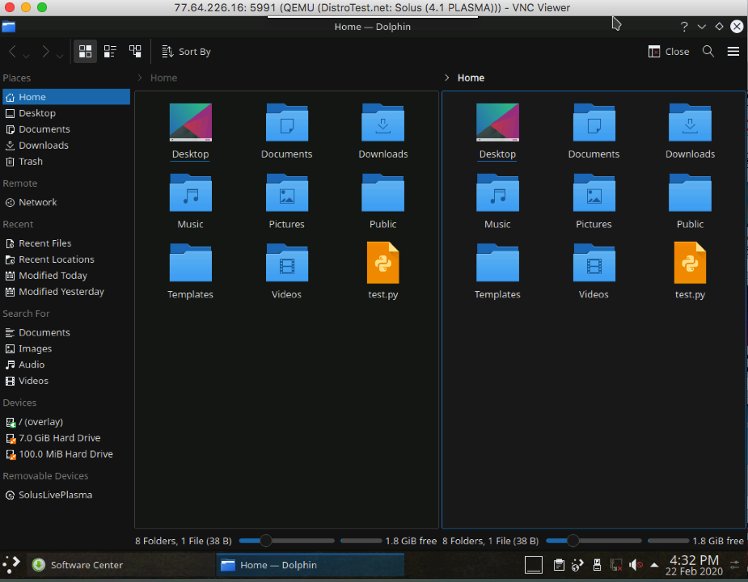

Trying Solus Linux on Distrotest.net
Background
From 2019 I have been trying to test Solus Linux, but was not sure if it was worth downloading and then testing it on my VM. I have heard positive reviews about its gaming capabilities but I wanted to test Solus as a daily driver without downloading the ISO. This led me to search for options where I can test a Linux distribution online without downloading.
Last year I heard about distrotest.net but I was not sure how good was the site. After finding good reviews about the site I gave it a try and rest of the blog is my experience testing Solus.
Introduction
Distrotest
DistroTest is the first and probably the only online operating system tester you can test a live linux distribution within a browser without either installing the distribution or needing a VM or ISO to test it in a Sandbox.

There a list of linux distributions to choose from, you choose the appropriate version of the distro you want to test and click start. The distro runs in a QEMU-hosted window. Distrotest uses QEMU which is a generic open source machine emulator and virtualizer.
You can connect either via VNC live session in browser or directly connecting via your VNC client software. I used both the VNCViewer in my machine and once the time limit for the session was over, I used the live browser VNC session. I would say the browser version gave best results though overall there was a latency in using VNC on Distrotest which is expected given the bandwidth and system limitation of QEMU.

Perhaps the best benefit from using DistroTest.net is the ability to check out Linux without disturbing a single thing about your current computer configuration. It is not a perfect solution -- but it beats the alternatives.
You can check more about Distrotest in the below links:
Solus Linux
Solus Linux is an independently developed OS which uses Linux OS but does not build upon other popular Linux distributions like Ubuntu, Debian, Archlinux or Fedora. Based on its wikipedia pages
Starting with the Debian branch of Linux it migrated to a unique approach including Pisi and Evolve OS.
It is offered as a curated rolling release model under the slogan "Install Today. Updates Forever". Solus contains a wide variety of desktop environments depending on release chosen, options include Solus own Budgie Desktop, GNOME, MATE and KDE Plasma.
I chose KDE Plasma version for the testing as I just did not want to test Solus but also wanted to check out how KDE Plasma as a desktop environment felt.
First Impressions
Initially I thought to make it a quick review as I did not expect to get much performance from the slow VNC session but as I started exploring various aspects of Solus and KDE Plasma I ended up doing a much more detailed hands on Solus than I earlier intended to do. The QEMU VM did not have an internet connection and since it was a remote VM I did not get a chance to test the multimedia capabilities of Solus extensively.

Solus comes with Firefox as its default browser and LibreOffice its its default office suit and Thuderbird for emails, hence I rather explored the features that differentiates from the other distributions that I have reviewed earlier.

Positives

For me Linux Lite and Deepin have been absolute best when it comes to desktop experience. But KDE Plasma was head to head in many features. The dark theme of Solus was darker than Linux Lite but surprisingly looked refreshing. Some of the key features for me, the desktop layout and the wallpaper used were soothing to the eye and the mouse clicks were snappy despite the slow VM. Though panel layout looked much like Linux Lite but the start menu and the Dolphin file browser was much cleaner to me than Deepin or Linux Lite.
The most impressive thing for me was Kate, the default Advanced text editor that comes with KDE Plasma. And the favorite part for me was its native support for programming languages and doubling as a IDE when I wished to develop a small test program. In the small session I was able to write a small program and test it. This itself speaks volume about Solus as a distribution and Kate as a programming editor. In many ways I like Kate over Geany or Notepad++.

Dolphin File browser which came bundled with this distribution had a dark theme that was more modern than other file browsers that I have seen and the ability to split the file browser into two panes is my favorite feature as it makes the process of copy paste and moving files between two different folders very easy.
While I saw some new multimedia applications like SMPlayer and mpv. Elisa was the music app that touched my heart. After Rhythmbox , Elisa with its modern look and music centric UI has been the best looking music player that I have seen so far. I am surely going to try the music player soon. In the current time where we tend to use streaming services and phones to consume music, still apps like Elisa have a niche when we want to use our PCs for multimedia.
I also liked its Image Viewer which reinforces my view about KDE is that this UI is not just for a new user but rather has so much to offer to pro users, e.g. the metadata tab that comes with Gwenview comes with the default UI which is very much helpful when you open an image. You are not just looking at an image but getting information like Resolution, tagging and the filename.
Negatives
I should not say these as the negatives but personally I felt as quirks which would be difficult for linux users who are used to Distro hopping.
My biggest struggle was to find the softwares that I would use as a regular Linux user to download directly using either yum, pacman or apt. Since this is a distribution built upon Pisi linux, it uses its package manager eopkg. Which to me is one another package manager to learn though a feature rich and complete package manager for Solus, though the Software Center provided on Solus was a better experience.
I hope this is where things like flatpack and snap package formats will help in standardization of package distribution technologies across various linux distributions.
KDE Plasma & Solus is a very feature rich Desktop environment and that is its bane as well as most of its features are hidden from plain sight. I wish there was a quick and easy help option like Mageia or Linux Lite, this is something that Solus and its community can improve. Protip anything you want to find in KDE Plasma, go to its start menu and type it in the search. Many a times what you are searching you will find there.
While its not a let down, but from the KConsole terminal I expected more having used to seeing so many pro features with other softwares in the KDE ecosystem provide. After using the terminal of Linux Lite I am now used to comparing those terminals with it. It may be so that I need to spend more time with KConsole.
Final Thoughts
While many users expected me to review Solus with its original GNOME version and may be disappointed with my review of KDE Plasma version. But being a user of light weight Linux distros I feel Solus 4.1 KDE Plasma version that I tested can also be a good light weight option for your machine as a daily driver provided you get used to its quirky package manager and wish some pro features that KDE Plasma provides. For me Solus
KDE Plasma version is on the shortlist when ever I plan move from Lubuntu which I am currently using.